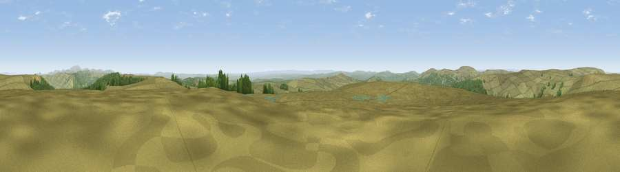

Wool Meath
#4857 in England · top 11% of its area beats it · —The view, rendered

A 360° render of this exact spot computed from the terrain model, tree cover and land cover — summer colours, afternoon light, calibrated against photographs of famous viewpoints. Real trees, hedges and buildings will differ in detail.
The panorama
Grey silhouette: terrain skyline in each direction (720 bearings, Earth curvature and refraction included). Dashed green: skyline with trees (+15 m) and buildings (+8 m) as obstacles. Blue strip: how far the ground is visible on each bearing.
Where the view opens
Wedge length = distance to the farthest visible ground on that bearing (vegetation-aware). Rings at 10, 25 and 50 km.
What fills the view
83% grassland · 16% woodland · 1% wetland
Angular shares of the visible panorama (visual magnitude), not map area. Landscape diversity 0.22 (0–1 Shannon).
Key numbers
More beautiful places nearby
The staircase of upgrades: each row has a higher view potential than everything closer. Driving times are estimates from straight-line distance, calibrated against real road routing — check an actual route before setting out.
| Place | Direction | Drive | Score |
|---|---|---|---|
| Viewpoint near Byrness | E · 2 km | ~5 min | 72.2 |
| Viewpoint c12068_7343 | NW · 5 km | ~10 min | 73.7 |
| Blackman's Law | ESE · 5 km | ~11 min | 74.1 |
| Ellis Crag | ENE · 5 km | ~11 min | 77.2 |
| Monkside | SSW · 5 km | ~11 min | 78.4 |
| Viewpoint c12122_7374 | NNW · 7 km | ~14 min | 78.9 |
| Viewpoint c11995_7247 | W · 8 km | ~16 min | 82.1 |
| Viewpoint c12273_7856 | ENE · 26 km | ~42 min | 83.7 |
55.29163, -2.47159 · source: osm peak · position refined by local search. Computed location — check access rights before visiting.